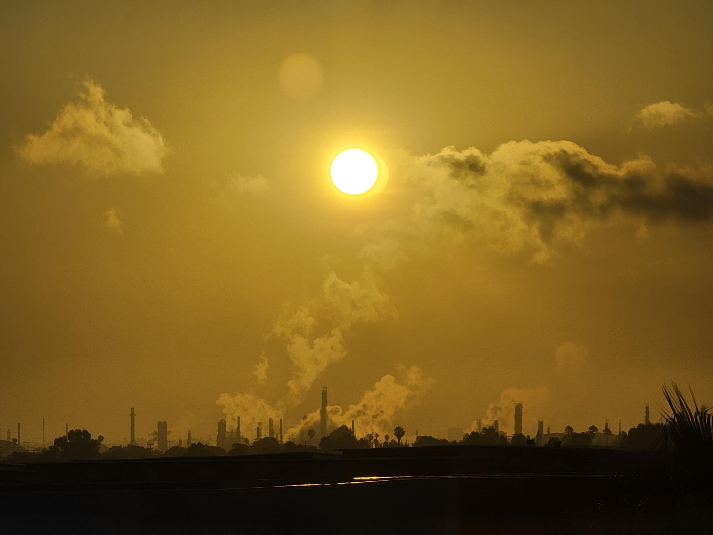
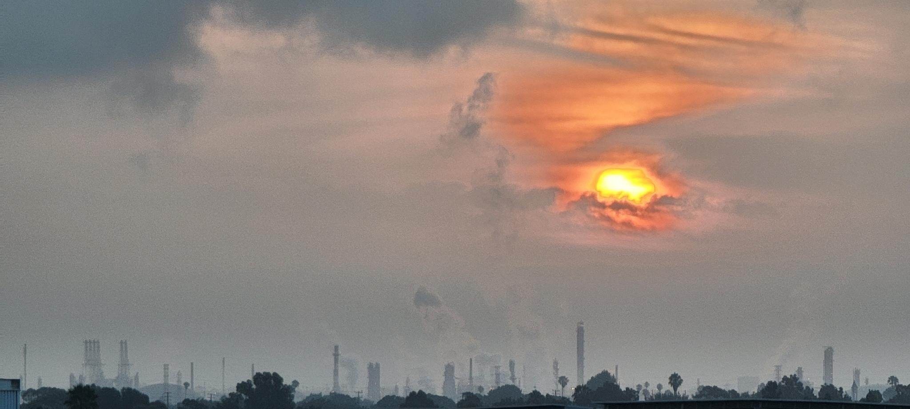
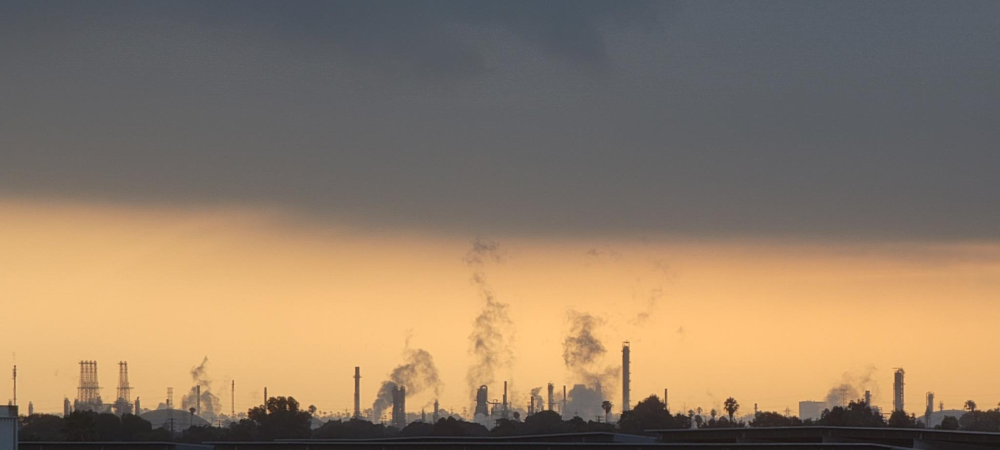

Industrial Photos
Table of Contents
Introduction
A collection of photos that I have taken of of various industrial sites as a hobby, mostly organized by date.
LA Port Photos W46
I took some photos of the port at night. It was interesting to see the ships operating even after dark 1 This is largely due to disruptions in the supply chain, and there is a plan to move to 24/7 operations. with massive amounts of cargo moving about. The port itself, when you consider both the port of LA and port of Long Beach, is the largest in the western hemisphere, moving over a hundred megatons of freight every year. It's truly an amazing sight to see in operation.
Cranes and Containers
I really like the composition of this image. There's just something eerie and beautiful about the moon obscured by clouds lit up by the lights of the port below. The lines that the lights make is also nice.

The cranes loomed over the palm trees like weird, at-at walkers or something of that sort.

The ONE HAMMERSMITH
I also saw the ONE HAMMERSMITH, a New Panamax cargo ship. The ship slowly followed the boat out to sea. 2 I also saw the boat used to transport the port captains back and fourth jet out to the ship. This resulted in me getting a variety of different angles as it passed. It was pretty impressive because you could hear the engine across the canal and feel the current on the boat.
How the illumination manages to sort of ring the ship in a halo makes this one of my favorite shots from the night.

A few pictures of the bow of the ship as it travels by.

Oil Refinery W29
While I was staying in the hospital due to Evan's syndrome 3 A rather nasty autoimmune disorder which basically occurs when you have your immune system destroying both your platelets and red blood cells. Not fun. Thankfully I am doing much better right now and am not currently experiencing issues. I had a room that overlooked the rest of the hospital and the Phillips 66 Wilmington oil refinery.
Tuesday
The sky was an odd yellow color on , so I took some photos of the refiner over the roof which turned out fairly dramatic.

Saturday
Some of the photos on were also fairly dramatic and impressive, with clouds and the sun making for a rather beautiful sight.
,
Sunday
The refinery in the morning. on , with some clouds overhead.
